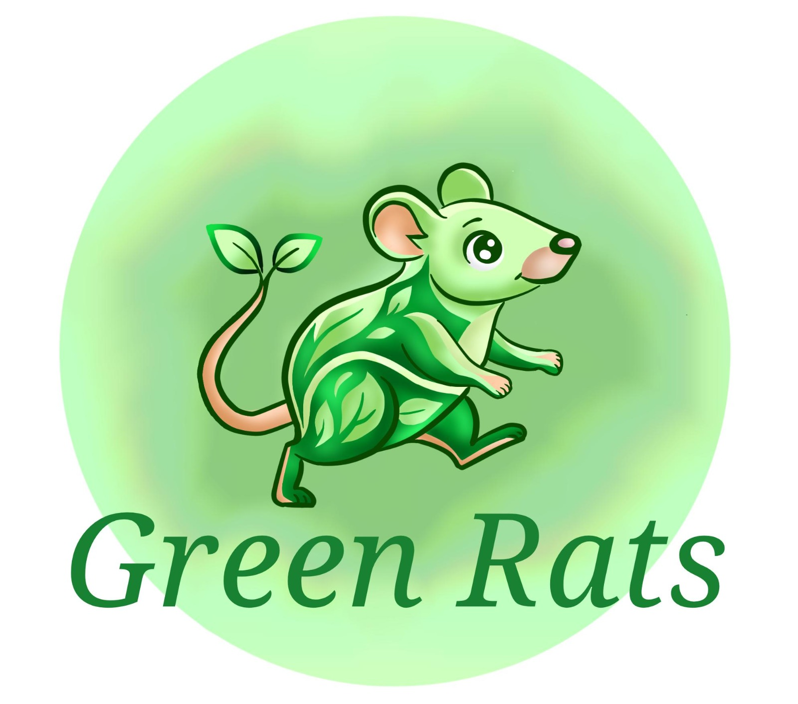

Aplicativo sustentável para conscientizar usuários sobre emissões de gases do efeito estufa.

O Green Rats permite registrar atividades relacionadas à alimentação, transporte, consumo, hábitos, casa e natureza.
O aplicativo calcula o CO₂ equivalente evitado e usa pontuação, conquistas e sequências para motivar hábitos sustentáveis.
Registro de ações sustentáveis.
Pontos e conquistas para engajamento.
Estimativa de emissões evitadas.